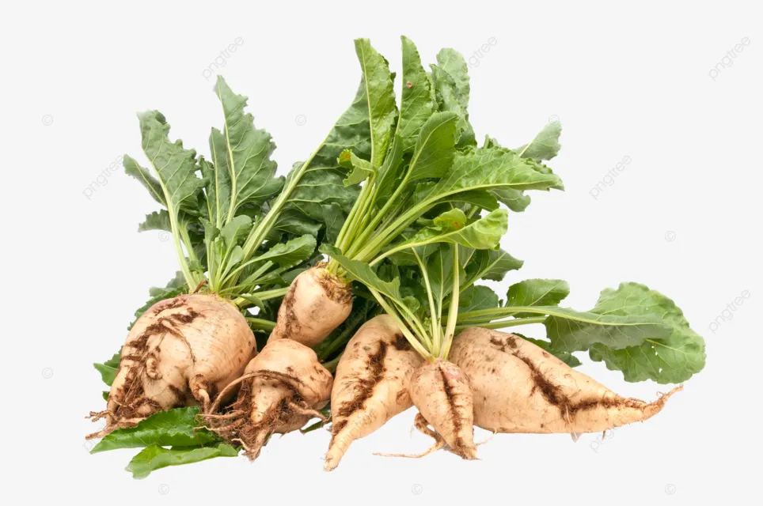
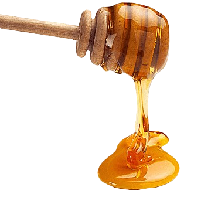
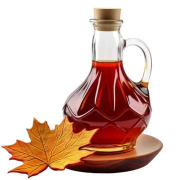
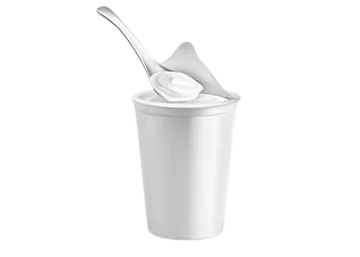
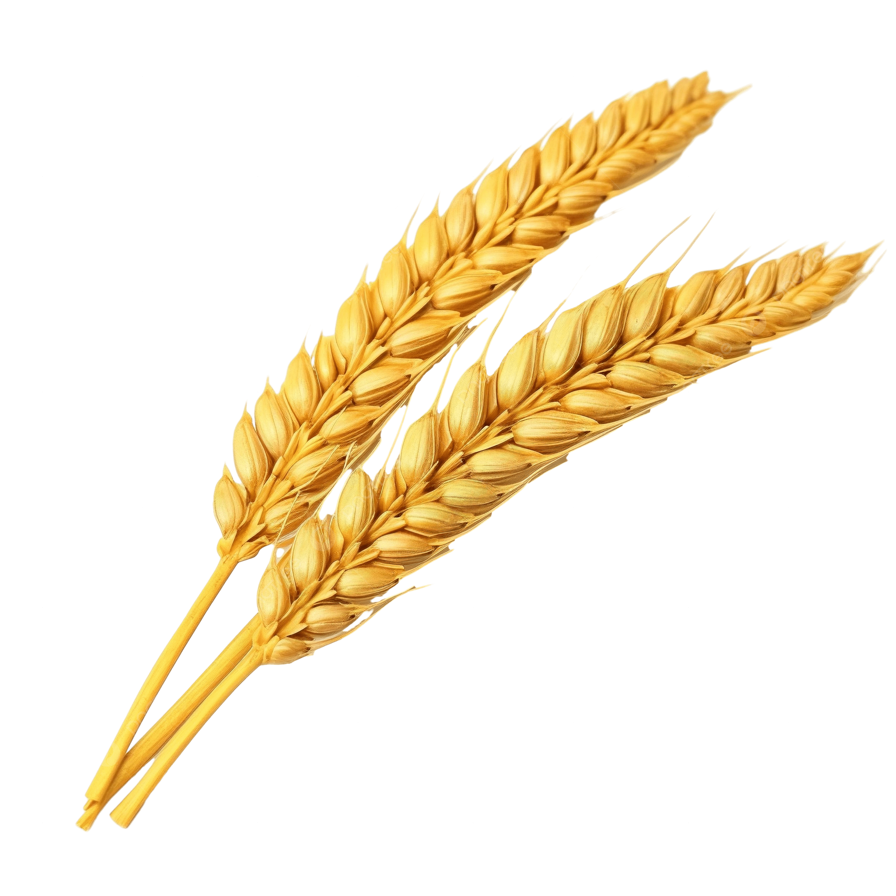
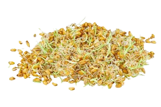

Alimentos que contienen Sacarosa
Fuentes naturales de Sacarosa
Caña de azúcar
Principal fuente de sacarosa comercial
90% de sacarosa

Remolacha azucarera
Segunda fuente más importante de sacarosa
85% de sacarosa
Dátiles
Contienen aproximadamente 80% de sacarosa natural
80% de sacarosa

Miel
Contiene 1-5% de sacarosa natural
1-5% de sacarosa

Jarabe de arce
Contiene 60-70% de sacarosa
60-70% de sacarosa
Alimentos que contienen Lactosa
Fuentes naturales de Lactosa
Leche animal
Contiene 4.8% de lactosa en promedio
4.8% de lactosa

Yogures
Contenido reducido (3-4%) por fermentación
3-4% de lactosa
Quesos frescos
Hasta 2.5% de lactosa
2.5% de lactosa

Crema de leche
Contiene 2-3% de lactosa
2-3% de lactosa
Alimentos que contienen Maltosa
Fuentes naturales de Maltosa

Cebada germinada
Importante fuente de maltosa en la elaboración de cerveza
5-9% de maltosa

Cerveza
Contiene maltosa residual tras la fermentación
3-7% de maltosa

Cereales germinados
El proceso de germinación produce maltosa
2-4% de maltosa
Pan y productos horneados
La fermentación produce pequeñas cantidades de maltosa
1-3% de maltosa